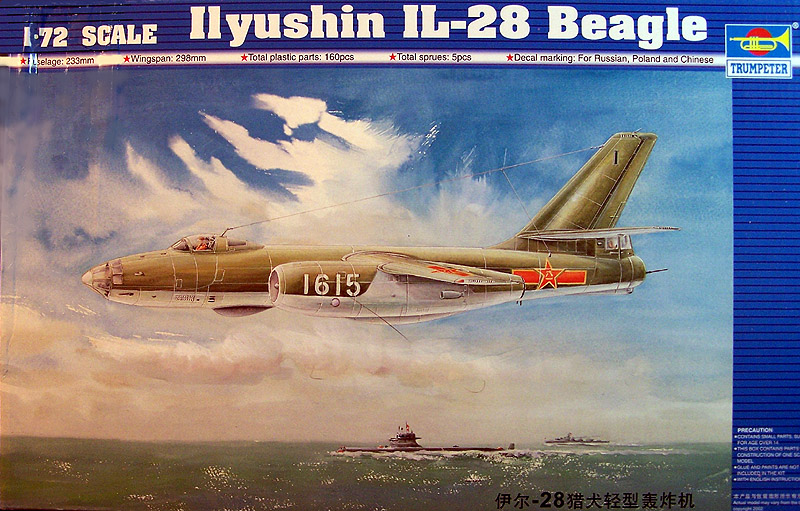
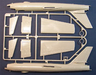
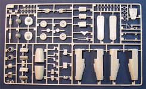
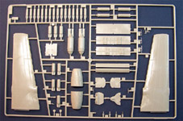
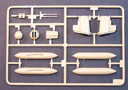
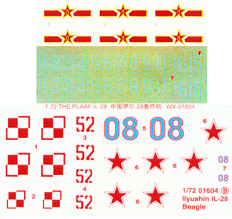

{kind=link}
{kind=link}
{kind=link}
{kind=link}
{kind=link}


1/72 Trumpeter Ilyushin IL-28 Beagle

Kit #1604 MSRP $12.95
Images and text Copyright © 2005 by Matt Swan
Developmental Background
The first jet bomber to enter service with the Soviet air force was the IL-28 tactical day bomber, Russia's equivalent to the British Canberra. Designed in the late 1940s with an orthodox configuration, the IL-28 was powered by Two Klimov VK-1 centrifugal-flow turbojets developed from the Rolls-Royce Nene were slung underneath the wings and extended well out from the leading and trailing edges. The high-mounted unswept wing was of conventional design but the swept tailplane ensured pitch control in high Mach dives. The tubular fuselage was cigar-shaped, and tapering to the rear, with a rounded, WWII-style greenhouse for the bombardier/navigator. The pilot occupied a fighter style cockpit equipped with an ejection seat and covered by an elegant bubble canopy. The tail of the Beagle contains the rear gunner/radio operator and two 23mm NR-23 cannon. The tail turret was unusual for an aircraft this size, but was considered much more efficient than a dorsal turret.
First flown on August 8th, 1948, the IL-28 entered service with bomber squadrons in 1951 and was given the NATO reporting name "Beagle" and remained in production for many years. In addition to the twin 23mm cannon in the tail it had two 23 mm NR-23 cannon in a fixed nose installation and could carry up to 3000 kg of disposable stores in a lower fuselage weapons bay. The IL-28 Beagle formed the backbone of bomber forces around the world until the 1980's and even early 90's. Beagles served with most of the major Arab air forces. In 1956 the arrival of 50 IL-28s in Egypt was alarming to the Israelis and a significant factor in the origins of the 1956 Suez War, in which all the IL-28s sent to Nasser were destroyed on the ground. Again in 1967 and yet again in 1973, the IL-28 featured as a significant ground target for the Israeli Air Force. During the Cuban Missile Crisis of 1962, Soviet Premier Khrushchev agreed to remove the offensive missiles as well as the medium range twin-jet IL-28 "Beagle" bombers being assembled in Cuba.
The Beagle saw limited service in a civil war in Yemen and in Vietnam and the Soviets pulled it out of mothballs to serve in Afghanistan. It's supposedly arcane tail turret equipped with twin 23mm machine cannon was used to rake the surroundings of the site of an air strike. The IL-28 quickly taught Afghan FLAK gunners and Stinger crews that popping up from out of their office to get in a potshot on the departing bombers might be a good idea when dealing with Su-25's but if they tried to pull this stunt with a flight of ancient IL-28s the were met with a blast of 23mm rounds. The IL-28 was still produced until fairly recently in China and is in service in some numbers in that country as well as North Korea and it is reportedly also operated in very small numbers by Egypt and Romania. Perhaps one of the most versatile of Soviet bombers it was exported to over 20 countries, served as reconnaissance aircraft, torpedo bomber, target tug, anti-submarine aircraft, and target drone. According to some estimates over 6000 were built by the Soviet Union and China.
The Kit
For being such a prominent aircraft within the Soviet Air Force and in other communist block air forces it is surprising that there are not kits from the “Big Three”. This was originally kitted by Bilek then reissued by Italeri. Next, Trumpeter came into the game and retooled the original Bilek offering which improved the overall fit of the kit and the interior detail. Today we are looking at the end product from Trumpeter. The kit arrives in a sturdy top opening cardboard box with eye-catching graphics of a Chinese aircraft. The original Bilek kit consisted of two parts sprues but Trumpeter has grown that into four. The surface texture is nice and smooth with nicely engraved panel lines unlike the rough surface and panel line trenching seen on the Bilek/Italeri offering. Many of the original quality issues have been resolved.
The kit includes a cockpit of mediocre detail and a nearly bare-naked bombardier/navigator compartment. The dash is very poor; the instruments are not detailed, not lined up properly or even formed in complete circles. The open bomb bay has adequately detailed sidewalls and bulkheads but the doors are kind of thick. This is also true of the landing gear doors. Three different bomb load options are provided along with wing tip tanks. Two options exist for the tail turret as well. The inner wall piece for the landing gear bay is somewhat different engineering where a single large piece is bent ninety degrees in two locations then installed. The kit includes two crew figures that both have a good level of detail but this is destroyed by the large sinkholes in the chest of each figure. Speaking of sinkholes, I noticed several light sink marks along the fuselage top – these are barely noticeable.
When removing the fuselage sections for test fitting I noticed that the sprue gates were slightly on the heavy side and careful clean-up is required. There is a noticeable level of flash around several edge points and inside edges of access doors. There are several injector pin markings inside the large pieces all of which retain a fine flash trail. The fit of the main parts appears quite good and panel lines seemed to meet up properly. Besides the four sprues of gray injection molded pieces is a single medium sprue of clear parts. This includes three pieces for the pilot’s canopy so it can be modeled open or closed, the bombardier’s greenhouse and several little marker lenses. The clear pieces show good clarity and well defined raised frame lines. Taking a count we have ten clear pieces and 156 gray pieces for a total of 166 pieces in the box – a pretty respectable count for a 1/72-scale kit.




You may click on the small images above to view larger pictures
Decals and Instructions

The instructions consist of a four panel fold-out that results in eight A4 size panels. It begins with a black and white reproduction of the box art along with an extensive color chart. A complete parts map, key code, recommended tool list and decal application instructions, follows this. The next five panels consist of eight exploded view construction steps. These all appear to be well organized and clear. There are plenty of color call-outs and a few scattered construction tips. The last panel shows exterior painting for a Chinese version in olive drab over gray along with decal placement instructions. One additional sheet gives painting instructions and decal placements for a Polish version and a Russian version.
&Nbsp; The kit decals consist of two small sheets. The larger of the two contains the markings for the Russian and the Polish aircraft that are both bare metal finishes. The second sheet has the yellow-rimed red stars and bars for the Chinese Air Force. In addition, here is a twin set of white numerals. I adjusted the contrast of the image to attempt to show these marks, as a white decal on a white background does not scan well. The decals cover only the basic national markings; there are no service markings or warning stencils. Print registry and color density look good. I have not had an opportunity to use Trumpeter decals yet so cannot comment on their reactivity to setting solutions.
Conclusions
This is a reasonably nice kit of an elegant early jet bomber. The parts are well engineered and have a good fit. There are options for two tail turret systems and three bomb loads. Interior details are soft and in the navigator’s area, totally lacking. Instructions are good and the decals, while basically sound are not very comprehensive. A few nice aftermarket items exist that can really help this kit out. Hi-Decals makes two different sheets that give the modeler a wider range of options with better quality markings and both Part and Eduard make some very nice photo etched sets for the interior and exterior of the model. Pavla offers a very nice resin cockpit set for the model that includes replacement ejection seats, instrument panels, hatches and other nifty items. Pavla also offers the ejection seat by themselves if you don’t want to go hog-wild with the full set. During the Cold War era, this aircraft played an important role in many places for many years and this kit makes an interesting addition to a collection. I give it a good recommendation.